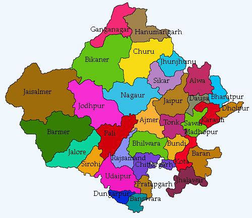

Rajasthan
Rajasthan is a state in northern India. It covers 342,239 square kilometres or 10.4 percent of India's total geographical area. It is the largest Indian state by area and the seventh largest by population.
JAIPUR THE PINK CITY
1. City Palace

City Palace has stood at the heart of the Old City of Jaipur for nearly three centuries, shortly after Maharaja Sawai Jai Singh II decided to relocate his court from the city of Amber. Protected by huge guard walls, the fairy-tale-like structure is still the home of Jaipur's modern-day royal family, and is more extravagant and enchanting than you might imagine. City Palace is more than a sand-colored regal abode—it's a sprawling complex of buildings built around a series of landscaped garden courtyards overlooking Jaipur and Lake Palace. The entire property is a stunning display of Rajasthani and Mughal architecture. The current occupants reside in the most eye-catching building, the Chandra Mahal, an elegant structure with curved eaves and domed rooftops. Each of its seven stories features an entirely different style. The ground floor is included in the price of admission, but you'll need to book a private tour to go upstairs. Other noteworthy places for sightseeing at City Palace include the Mubarak Mahal (Welcome Palace), which contains displays of dazzling costumes and textiles; the Armoury, a museum-like space dedicated to preserving finely crafted daggers and swords; Pritam Niwas Chowk (Peacock Courtyard), which has mesmerizing doorways painted to look like the feathers of its namesake bird; and Diwan-i-Am (Hall of Public Audience), which showcases the palace's exquisite collection of miniature paintings. After exploring the palace, check out the Friends of the Museum Bazaar—it has some of Jaipur's highest quality souvenirs (with equally high prices). Address: Tulsi Marg, Gangori Bazaar, J.D.A. Market, Pink City, Jaipur.
2. Jantar Mantar

At first glance, Jantar Mantar may look to be nothing more than a bunch of larger-than-life abstract sculptures. But this is not an art gallery—it's a special collection of astronomical tools started by Rajput ruler Jai Singh II to measure the heavens nearly 300 years ago. Each of the 20 or so structures at the UNESCO World Heritage Site serves a distinctive purpose. The observatory's massive sun dial, known as Samrat Yantra, is particularly striking. At 27 meters tall, it casts a huge shadow that accurately measures time down to two seconds. The elaborate Jai Prakash also tracks the passing of time, using the shadow of a metal plate suspended above a sunken bowl-like structure. Other tools at the observatory can track stars and even predict eclipses. Hot tip: It's worth hiring a private guide at Jantar Mantar if you want to learn how each of the structures work. Address: Gangori Bazaar, J.D.A. Market, Pink City, Jaipur
3. Hawa Mahal

If you had any preconceived notions about how the buildings in Jaipur look, they probably came from Hawa Mahal (Palace of Breeze). It has all of the distinctive architectural features that appear in postcards of the city, from the salmon-pink, honeycombed facade, built to resemble the crown of Hindu god Krishna, to the geometric accents and rows of tiny windows. The landmark was built in 1799 to allow royal ladies to watch festivals on the street without being seen by the public. Its 953 windows allow plenty of breeze to pass through, making it an ideal summer palace. Tourists can learn about the history of the sandstone structure at the palace's small museum—the ceremonial armor collection is particularly interesting. You can also wander the narrow hallways that run throughout the palace. Don't miss the colorful glasswork in windows and doorways, which cast an otherworldly glow on chambers throughout Hawal Mahal. Address: Hawa Mahal Rd., Badi Choupad, J.D.A. Market, Pink City, Jaipur
4. Amber Fort

Jaipur is home to one of India's most-visited forts: Amber Fort. Built in the year 1592, the sandstone and marble monolith stands atop a small hill roughly 20 minute's driving distance northeast of the center of Jaipur. It's best known for being a pristine example of Rajasthani architecture. Getting to Amber Fort typically involves a short uphill hike that's well worth the effort. It's decked out with intricate patterns of inlaid marble in nearly every color of the rainbow. The fort is laid out into four separate sections, each of which has a spectacular garden courtyard outside. While you'd never know it from above, you can actually explore the fort's underground tunnels, some of which have been restored. This UNESCO World Heritage Site has a fascinating history of legends, betrayals, and romance—but the best way for tourists to hear these stories is to hire a private guide at the Amber Fort. Address: Devisinghpura, Amer, Jaipur
5. Albert Hall Museum

When English writer Rudyard Kipling visited the Albert Hall Museum in Jaipur, he wrote that it was a "rebuke to all other museums in India from Calcutta downwards." That's high praise coming from the son of a curator, and fitting for this renowned institution. The oldest museum in Rajasthan, the Albert Hall Museum boasts an extensive collection of art and historically significant artifacts. Come for the Egyptian mummy, stay to see antique coins from different periods in India's history, charming permanent exhibits of miniature paintings, 18th-century costumes worn by members of different castes, and a peculiar collection of 19th-century clay figures demonstrating all the yoga poses. Hot tip: Visit the museum at night, when multicolored lights brighten the exterior of the alluring building. Address: Museum Road, Ram Niwas Garden, Kailash Puri, Adarsh Nagar, Jaipur
6. Birla Mandir

In a city that seems to be dipped from top to bottom in pink, the stark white marble Birla Mandir stands out—big time. The Hindu temple pays tribute to Lakshmi, the goddess of wealth and purity, and Vishnu, one of the religion's main deities. The marvelous structure exudes a quiet, peaceful vibe, offering just the right atmosphere to appreciate fine marble carvings, shrines to gods, and gorgeous sunset views. While you don't need more than 30 minutes to get a sense of the space, the experience will prove to be a restorative break from a day of sightseeing. Address: Jawahar Lal Nehru Marg, Tilak Nagar, Jaipur
7. Nahargarh Fort

When it comes to sightseeing around Jaipur, the views don't get better than what you'll find at Nahargarh Fort. Also known as Tiger Fort, the nearly 300-year-old fort overlooks the entire city from atop the Aravalli Hills—a prime location for the structure to defend Jaipur against enemies many years ago. More than just a formidable barrier though, this fort also contains Madhavendra Bhawan, a summer destination for royalty. The sumptuous Rajasthani building features a dozen identical boudoirs for the queens, which all connect to the king's suite through mural-filled corridors. Tourists can also explore the fort's wax museum and sculpture park. And if you're feeling hungry, swing by one of the fort's many restaurants to tuck into traditional Indian cuisine. Address: Krishna Nagar, Brahampuri, Jaipur
8. Galta Ji

Sources of water can be few and far between in the desert state of Rajasthan. So it's no wonder that when people discovered a natural spring in a mountain pass in the Aravalli Hills, they honored it by building the Hindu temple Galta Ji. Nestled between cliffs, the temple features a few sacred water tanks, some with modest fountains, as well as frescoes that tell tales about Hindu god Krishna. While the official name for this place is Galta Ji, it's better known as the Monkey Temple for the hundreds of macaques and langurs that live here. Daring tourists might opt to buy a handful of peanuts at the gate to tempt the monkeys, but you're better off just watching the rambunctious creatures from a distance.
9. Amrapali Museum

When the founders of the beloved Indian jewelry brand Amrapali Jewels started collecting antique jewelry, they realized that some of these one-of-a-kind treasures deserved to be preserved and displayed. And so the Amrapali Museum was born. The jewelry museum in Jaipur features two full floors of glistening jewels and objects from its 4,000-piece collection, showcasing the vast range of Indian craftsmanship. The displays show just how seriously Rajasthani people take their gold, silver, and precious gems. Among the jewels, you'll see silver bands for horses' legs, a chariot fully covered in silver, embellished shoe covers, and a glorious crown for a groom from Himachal Pradesh. While these pieces are for display only, there's an extensive range of necklaces, bracelets, and other wearables available for purchase at the Museum Shop. Address: Ground Floor, K, 14/B, Ashok Marg, Panch Batti, C Scheme, Ashok Nagar, Jaipur
10. Museum of Legacies

For much of history, Rajasthan's most important handicrafts and works of art lived in private collections that were unavailable for viewing for the majority of the public. That all changed when the Government of Rajasthan opened the Museum of Legacies. Housed in a two-centuries-old mansion, this tourist attraction showcases
11. Jal Mahal

One look at the Jal Mahal, and you might think you're seeing a mirage. The graceful palace seems to float atop the twinkling Man Sagar Lake—a calm sight compared to the rest of the frenzied city. While it appears to have just one story, the Water Palace has four other levels submerged beneath a reservoir. Tourists can't access the site, however, that may change in the future. Rumor has it that entrepreneurs want to convert the decaying space into a luxe restaurant. For now, simply appreciate the beauty of the palace from afar. At night, it's lit up in all its glory, casting a golden, glowing reflection on the water
12. Markets

Rajasthani puppets for sale in Jaipur
Jaipur is a mecca for souvenirs. Markets in the Pink City brim with everything from costume jewelry and precious gem stones to embroidered textiles, cobalt blue pottery, and Rajasthani puppets. For a no-hassle shopping experience, head to the Handicrafts Emporium across from Ajmeri Gate. The government-run shop sells high-quality traditional handicrafts, like blue pottery decorated with yellow flowers, sets of wooden carvings depicting Rajasthani characters, and hand-printed saris. The prices you see on these items are fixed, so while you won't be able to negotiate a discount, you can also avoid the headache of bargaining. Johari Bazar is a jewelry-lover's paradise. The market glitters from top to bottom with dozens of shops selling everything from costume jewelry to fine silver and gold. No matter your budget, you'll find something beautiful to take home from here. Finally, don't leave Jaipur without a quick shopping trip to Bapu Bazar. Located just a few blocks southwest of Johari Bazaar, the tourist-favorite market is chock full of handcrafted trinkets, locally made textiles, bedazzled slippers, and souvenirs galore.